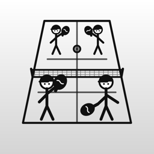

Run your pickleball sign-ups
PickleFamilia is the fastest way to run a recurring pickleball group. Build the week's games, share one link, and let your players claim their own slots — while you keep a clean roster and a live view of who's in.
Create a week of games with sensible defaults (Mon–Fri, your usual start times), set how many slots each game has, and publish when you're ready. Draft first, publish when it's final.
Publishing gives you a public sign-up page and an embed snippet. Drop the link in your group chat or paste the iframe into your club site. Players pick their name and grab a slot — and cancel their own with a PIN if plans change. Full games lock automatically. Players don't need the app — just the link.
Add players, set or reset their PIN, and deactivate anyone who's away — without losing their history. Every game shows who's in and how many slots are left.
Tap the mic and say “add Nancy to Tuesday” or “make next week with the usual times and publish it.” PickleFamilia turns plain speech into the right actions, asks when something's ambiguous, and never guesses. Typing works too. The voice/AI assistant uses your own Anthropic API key, stored only in your device Keychain.
The last open slot can't be double-booked. Sign-ups are first-come, and a game that's full stays full.